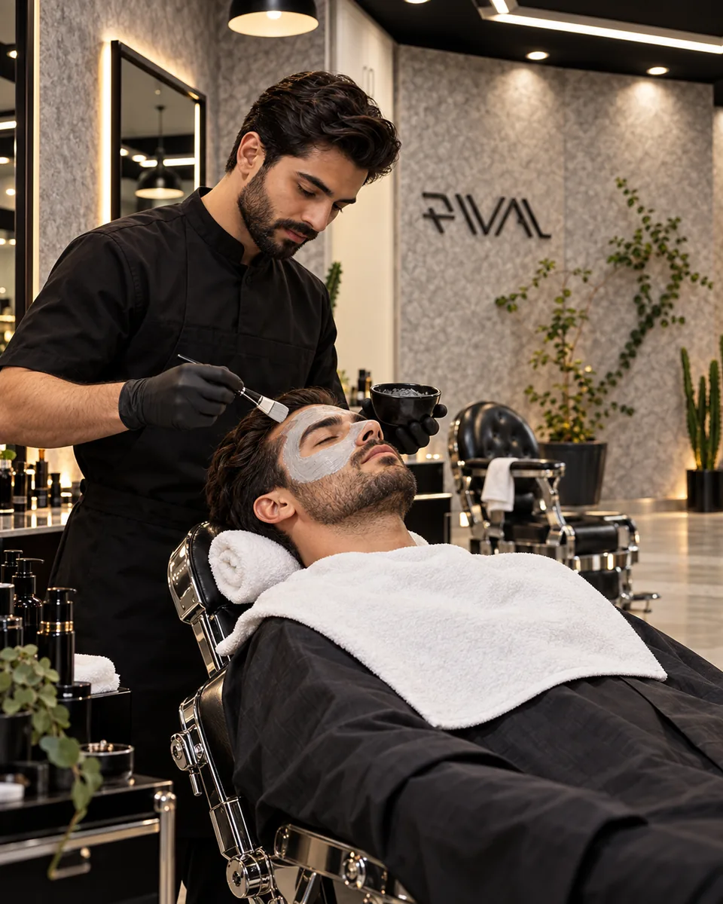
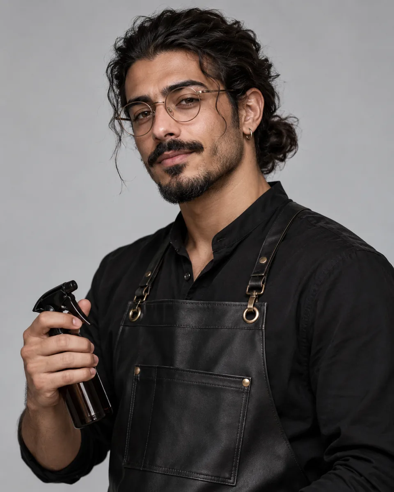

خدمت را انتخاب کنید
همه
مو
ریش
پوست
۱۸۰٬۰۰۰ تومان
اصلاح سر و صورت
۳۰ دقیقه
مو و ریش
۱۲۰٬۰۰۰ تومان
اصلاح ریش
۳۰ دقیقه
ریش

پیشنهادی
فیشیال
زمان و مبلغ با آرایشگر
درخواستی
دامادی
چند خدمت، برنامه با مدیر
آرایشگر را انتخاب کنید
برای «اصلاح سر و صورت»
امروز ۳ زمان
طاها
فید و فرم ریش
از فردا
مهدی
کوتاهی کلاسیک

از ۲۰ مهر
آرین
استایل و حالتدهی
پر است
سینا
تا یک ماه زمان آزاد ندارد